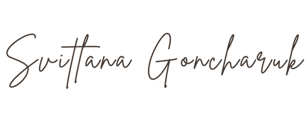
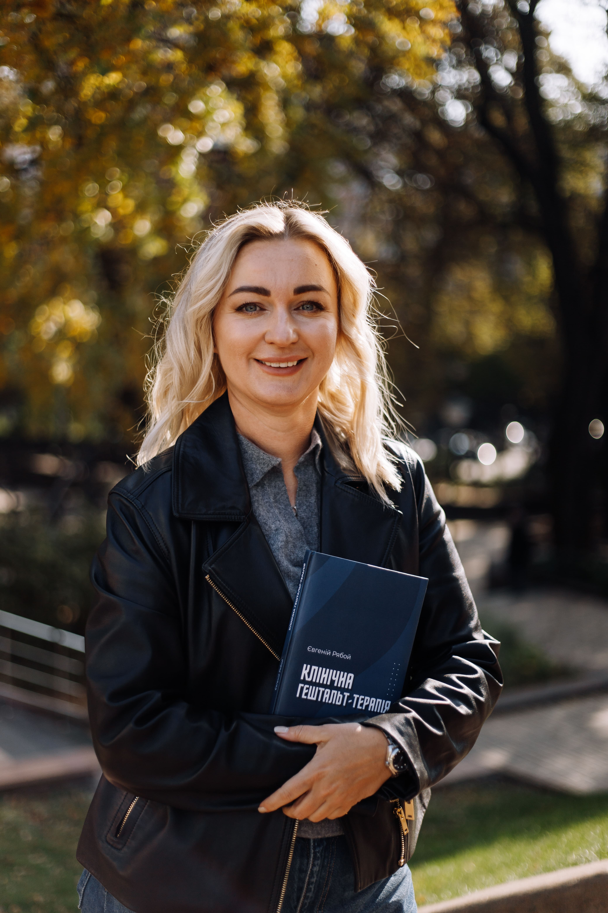

психотерапевт і коуч у гештальт-підході
Працюю з дорослими, які проходять важливі, іноді непрості періоди свого життя, коли з’являються запитання, на які немає швидких відповідей.
Записатисьпсихотерапевт і коуч у гештальт-підході

Працюю з дорослими, які проходять важливі, іноді непрості періоди свого життя, коли з’являються запитання, на які немає швидких відповідей, і виникає потреба краще зрозуміти себе та свої внутрішні процеси.
У роботі для мене головне — присутність. Жива, уважна, без поспіху й тиску. Я створюю простір, у якому можна зупинитися, побути в тиші, бути собою, помічати свої почуття й поступово знаходити власні рішення та опори.
Я не даю готових порад і не веду «правильним шляхом». Мені важливо йти поруч — з повагою до вашого темпу, меж і досвіду. Підтримую в моментах втрат, переходів і великих змін, коли особливо важливо, щоб поруч був хтось надійний, уважний і присутній.

Підтримую в моментах втрат, переходів і великих змін, коли особливо важливо, щоб поруч був хтось надійний, уважний і присутній

формати роботи
Онлайн / офлайн
Простір для уважної розмови з собою — про переживання, стосунки, тривогу, втрату опори й важливі внутрішні питання.
Для ясності, вибору й руху вперед без тиску. М’яка робота з цілями, спираючись на усвідомлення, а не на примус.
Місце живого досвіду поруч з іншими. Про контакт, підтримку й нові способи бути з людьми та із собою.
Терапія — це простір живої зустрічі, де можна зупинитися, почути себе й поступово знайти власну опору.
Я поруч. Оберіть зручний спосіб зв’язку.
Телефон: +38 098 403 57 56
Email: Goncharuk.ukraine@gmail.com
Найшвидший спосіб зв’язку. Ви можете написати мені особисте повідомлення для запису або уточнення деталей.
t.me/goncharuk_therapyДіліюсь думками про терапію, присутність і внутрішні процеси. Можна написати в direct.
@goncharuk.therapyОнлайн (Zoom / Google Meet) або офлайн за попередньою домовленістю. Тривалість сесії — 50 хвилин.